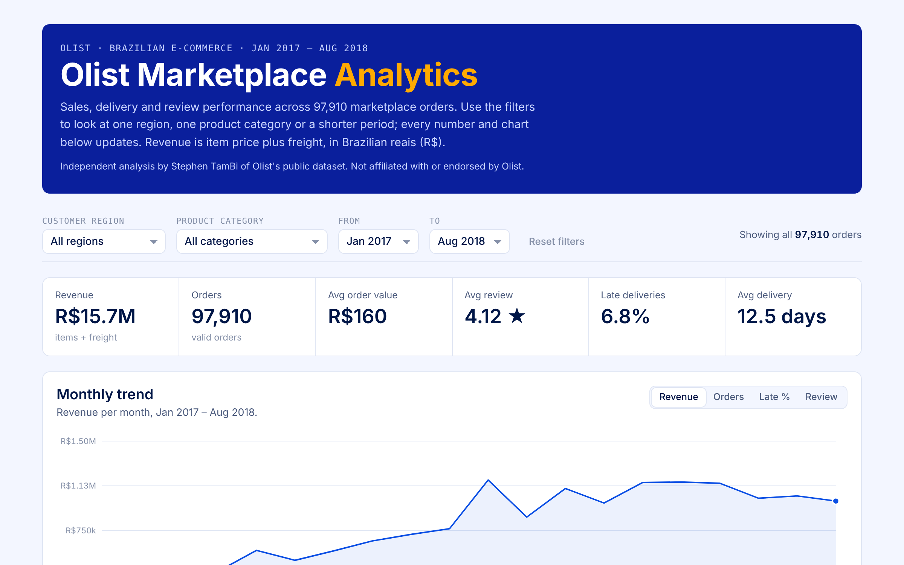
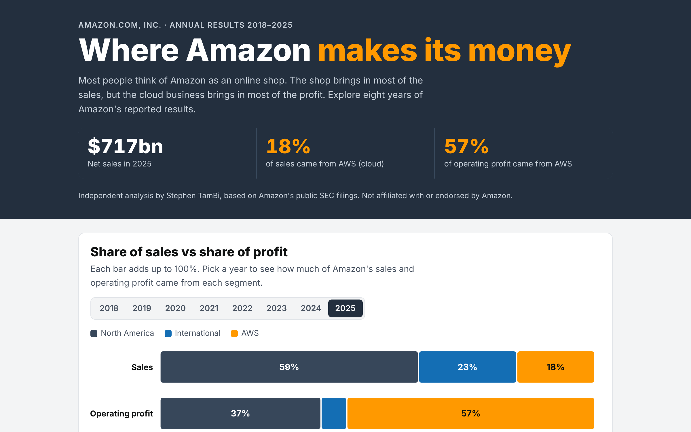
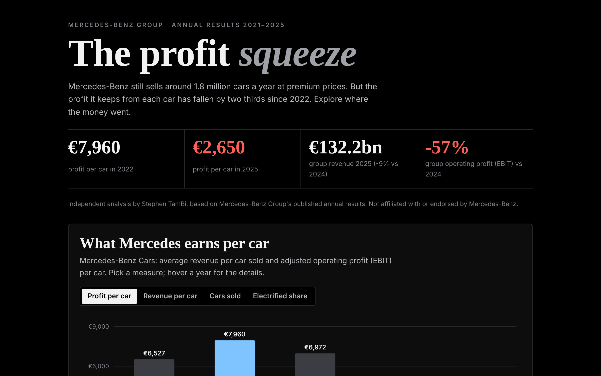
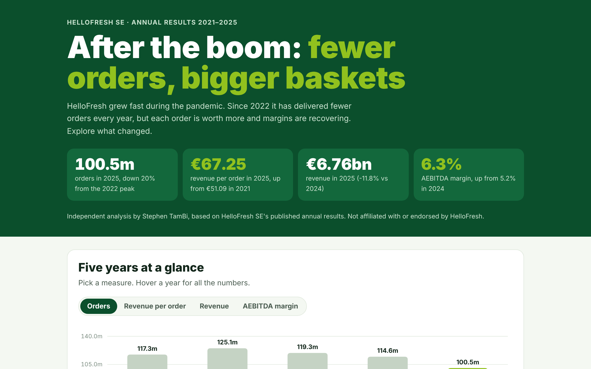

E-commerce analytics pipeline
100,000 marketplace orders modeled into a tested star schema. Late deliveries cause 32% of all bad reviews, and only 3% of customers buy twice.
I turn messy data into answers businesses can act on. Each project below starts with a real business question, uses real data, and ends with what the answer is worth in money. All of them are interactive: open one and explore.

100,000 marketplace orders modeled into a tested star schema. Late deliveries cause 32% of all bad reviews, and only 3% of customers buy twice.

Eight years of reported results. AWS made 18% of 2025 sales but 57% of operating profit; advertising grew 3.5× since 2020.

Why profit per car fell by two thirds while prices held. €7,960 per car in 2022, €2,650 in 2025, with a calculator for what would restore the margin.

Orders down 20% since 2022, revenue per order up 32%. One point of margin is worth as much as 16% more orders.
Star schemas, CTEs, window functions, dbt models with automated data tests, DuckDB.
pandas for cleaning and analysis, matplotlib and interactive web charts, scripted pipelines.
KPIs, cohort retention, unit economics and what-if scenarios that put a value on each recommendation.